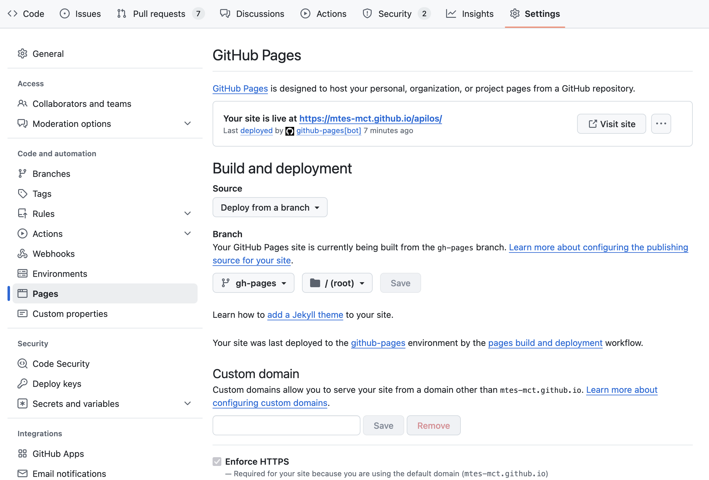

DEPLOIEMENT DE LA PLATEFORME APILOS¶
Solution d’hébergement¶
La solution souveraine PaaS de Scalingo est utilisée avec les composants suivants :
webapp : Application Django incluant interface et APIs, la webapp est déployé un système Ubunti 20.x
worker : worker Celery pour déléguer des tâches longues qui s’executeront de manière asynchrone
Une base de données postgres en version 12.11.0
Une base de données Redis utilisé comme «message queue» pour passer les instructions au worker
Les applications lancées sont configurées dans le fichier Procfile
La base de données est sauvegardée toutes les nuits et Scalingo propose une solution PITR (Point-in-time recovery) pour sa restauration.
CI/CD et branch git¶
Les « User Stories » (US) sont développées sur des « feature branches » (convention de nommage sNUM-US_DESCRIPTION) à partir de la branch main.
les feature branches font l’objet de pull request à merger sur main.
La solution github actions est utilisée: Github Actions La config est ici : .github/workflows
CI¶
A chaque push sur Github, le projet est compilé et les tests sont passés
CD¶
A chaque push sur la branche main, le projet est déployé en staging.
A chaque push de tag de la forme v*.*.*, le projet est déployé en production.
Déploiement¶
Lors du déploiement, les étapes définis dans le script bin/post_deploy sont exécutées :
Execution des migrations de la base de données
Population des roles et des permissions
Suppression des sessions expirées
Déploiement en staging¶
Le code est déployé en staging automatiquement via Github Actions quand il est poussé sur la branch main du repository Github
Pour forcer le déploiement en staging, il est aussi possible de pousser la branche main sur le repo git du projet sur Scalingo
git push git@ssh.osc-fr1.scalingo.com:apilos-staging.git main:master
Déploiement en production¶
Une nouvelle version de l’application est poussée en production à chaque ajout de tag de version (voir la documentation semantic versioning).
Pour forcer la mise en production il est aussi possible de pousser la branche main sur le repo git du projet sur Scalingo :
git push git@ssh.osc-fr1.scalingo.com:fabnum-apilos.git main:master
Déployer un nouvel environnement¶
ajout d’une application dans scalingo
Ajout d’addons : postgresql, redis
Ajout des variable d’environnement (Scalingo > Environnement)
Ajout du nom de domaine dans scalingo (Scalingo > Settings > Domain/SSL)
Ajout d’un enregistrement DNS CNAME vers l’APP Scalingo (Alwaysdata > Domains > DNS Records)
Forcer HTTPS (Scalingo > Settings > Routing)
Scale les APPs (Scalingo > Resources)
Créer le bucket sur scaleway
Pour le SIAP,
Créer un utilisateur SIAP et transmettre son id à l’équipe du SIAP
Executer une commande python sur un Scalingo¶
Il suffit d’ajouter avant python manage.py le début de commande :
scalingo --app <app_name> run ...
Modification de l’appartenance d’un programme à un bailleur ou une administration¶
Modification de l’administration¶
Récupérer au préalable les informations suivantes:
UUID du programme
Code de l’administration (cf. admin django)
$> python manage.py programme_update_administration
Quel est l'identifiant UUID du programme à modifier ? 4fa6ec1c-b89c-4a8e-ba2c-da18ad1bd194
le programme `4fa6ec1c-b89c-4a8e-ba2c-da18ad1bd194` : `Opération L9TQKLS6EC` va être modifié
Quel est le code de l'administration à laquelle le programme doit être rattacher ? 13055
le programme `Opération L9TQKLS6EC` va être attribué à l'administration `Métropole d'Aix-Marseille-Provence` de code `13055`
Modifier l'administration du programme (Non/oui)?oui
l'administration du programme `Opération L9TQKLS6EC` a été mise à jour avec l'administration de code `13055`
le programme `Opération L9TQKLS6EC` va être attribué à l'administration `Métropole d'Aix-Marseille-Provence` de code `13055`
Modification du bailleur¶
Récupérer au préalable les informations suivantes:
UUID du programme
Numero siret du bailleur (cf. admin django)
$> python manage.py programme_update_bailleur
Quel est l'identifiant UUID du programme à modifier ? 4fa6ec1c-b89c-4a8e-ba2c-da18ad1bd194
le programme `4fa6ec1c-b89c-4a8e-ba2c-da18ad1bd194` : `Opération L9TQKLS6EC` va être modifié
Quel est le siret du bailleur auquel le programme doit etre rattacher ? 48496369900026
le programme `Opération L9TQKLS6EC` va être attribué au bailleur `6ème Sens Immobilier Investissement` de siret `48496369900026`
Modifier le bailleur du programme (Non/oui)?oui
le bailleur du programme `Opération L9TQKLS6EC` a été mise à jour avec le bailleur de siret `48496369900026`
Remise à zéro des éléments métiers de la base de données d’un environnement¶
$> python manage.py clear_all_data
Les bailleurs, administrations et tous les objets leur appartenant seront supprimé (programmes, lots, conventions, logements, annexes, type_stationnements… etc)
ainsi que les utilisateurs qui sont ni superuser ni staff
⚠️ Cette commande n’est pas executable en production pour des raisons évidentes
Rechargement des fixtures de tests en staging¶
Il est possible de déployer un jeu de donnée de tests en utilisant la commande load_test_fixtures
$> python manage.py load_test_fixtures
Do you want to truncate Conventions/Operations/Lots (N/y) ?
Using default option: Operation won't be truncated
Do you want to truncate Users (N/y) ?
Using default option: Users won't be truncated
⚠️ Cette commande n’est pas executable en production car il n’est pas souhaitable de mélanger données de test et production
Chargement d’un jeu de test¶
Un jeu de données minimales est disponible dans le fichier dataset_staging.json. Il se déploie en utilisant la commande loaddata dataset_staging.json
⚠️ Cette commande ne doit pas être exécutée en production car il n’est pas souhaitable de mélanger données de test et production
Déploiement de Metabase¶
Suivre les instructions de la doc de l’incubateur :
https://doc.incubateur.net/communaute/travailler-a-beta-gouv/jutilise-les-outils-de-la-communaute/metabase
Pour mettre à jour
scalingo --app apilos-metabase-prod deploy https://github.com/Scalingo/metabase-scalingo/archive/refs/heads/master.tar.gz
Quelques informations complémentaires:
Metabase est installé sur le projet
apilos-metabase-prodsur scalingoL’installation de Metabase nécessite une base de données accessible en écriture. Nous avons doc fait le choix de créer une DB dédié à Métabase comme addon du projet
apilos-metabase-prodsur scalingo, celle-ci sert à l’administration de Metabase, les infomations de connection à la base de données sont accessible sur scalingo e interprétant la variable d’environnement SCALINGO_POSTGRESQL_URLLa base de données APiLos est configurée dans l’administration de Metabase et a un accès en Lecture seule
Les données stockées par Metabase sont cryptées grâce à la variable d’environnement MB_ENCRYPTION_SECRET_KEY
Metabase est accessible à l’adresse https://apilos-metabase-prod.osc-fr1.scalingo.io/
Deploiement de la documentation technique¶
Les librairies nécessaires à la génération de la documentation sont maintenus dans le document doc-requirements.txt, généré avec pip-tools depuis doc-requirements.in
La publication est executé à chaque mise à jour de la branch main via l’action github publish-docs.yml
La configuration Github suivante est nécessaire :

Comment release¶
Taggez le dernier commit de la branche main et uploadez sur github.
git tag v1.23.0git push --tagsLa CI va lancer les tests, déployer en production et créer une release.
Vérifiez que les déploiements en production se passent bien en consultant les logs. Une CI verte ne veut pas dire que le déploiement a fonctionné.
Ajoutez le changelog technique à la release github, vous pouvez le générer avec la commande
git log v1.23.0...v1.22.0 --onelineToujours sur la release github, ajoutez les sections Fonctionnalités, Correctifs, Mise à jour des dépendances et Amélioratons techniques. Ajoutez-y les lignes de changelog qui correspondent en reformulant pour les rendre compréhensible par quelqu’un de non-technique. Inspirez-vous des releases précédentes.
Prévenez de la mise en production sur mattermost, ainsi que sur le slack du SIAP.
Sur le board de sprint, passez les tickets de staging vers prod.